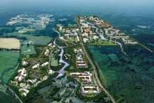
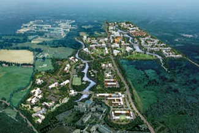
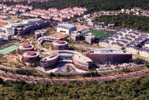
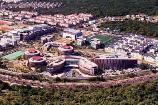
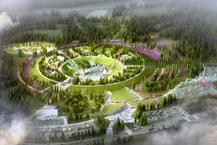
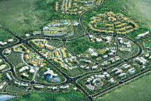
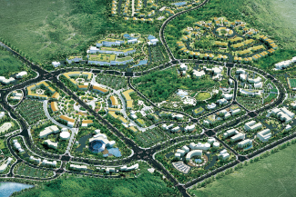

简介国际自由城市
- Home
- 基础情况
- 行政及经济
- 简介国际自由城市
国际自由城市
什么是国际自由城市？
“国际自由城市”是指放宽限制，采用国际标准，最大限度保障人员、商品、资本跨国流动和企业活动便利性的地区单位。
- 建立济州特别自治道及开发国际自由城市的特别法》第二条（定义）
济州在地理位置上靠近韩国、中国、台湾、香港、俄罗斯、日本等的东亚主要城市，拥有基于清洁环境和秀丽风景的优秀旅游产业基础设施，以及远离本土的特别法推行条件，被誉为韩国建设国际自由城市模式的最佳地点。
因此，韩国中央政府于1998年出台国际自由城市建设方针，并于2002年将济州确定为国际自由城市。济州的总体规划是将济州国际自由城市发展成开放化和自由化政策的示范地区，最大限度保障人员、商品、资本流动自由和企业活动便利，进而建设成确保国家竞争力的国家发展战略要地，以及21世纪东北亚的中心城市。
历史沿革
-
2017
- 3月 - 公布《济州国际自由城市二期综合规划修订计划》
-
2012
- 4月 - 健康医疗城动工
- 1月 - 确定及公布《济州国际自由城市二期综合规划》
-
2010
- 3月 - 济州尖端科学技术园区竣工
-
2009
- 6月 - 英语教育城市动工
-
2007
- 12月 - 神话历史公园动工
-
2003
- 2月 - 公布《济州国际自由城市综合计划》
-
2002
- 5月 - 韩国中央政府设立隶属于韩国国土交通部的济州国际自由城市开发中心（JDC），作为负责济州国际自由城市建设项目的专职机构。
- 4月 - 2002年4月，修订并施行《济州国际自由城市特别法》施行令，为国际自由城市奠定法律基础。
- 1月 - 将《济州道开发特别法》全面修订为《济州国际自由城市特别法》并予以公布。
-
1999
- 9月 - 1999年9月到2000年6月，在韩国建设交通部的主管下，由美国仲量联行（JLL）承办有关济州国际自由城市建设的可行性调研。
-
1998
- 9月 - 金大中总统南巡济州时表明将济州开发为具有特色的国际自由城市的方针，通过开发兼具旅游、高科技知识产业、物流及金融等综合功能的城市，突出济州的特点及潜力。
主要制度
| 「人员」自由往来 | 「商品」自由移动 | 「资本」自由流动 |
|---|---|---|
| 免签政策、允许外籍劳工长期居留、简化出入境流程等 | 采取贸易壁垒消除政策，如进口自由化、无关税政策等 | 外汇交易自由化等 |
主要项目
推动产业基础建设及招商引资项目，将旅游、教育、医疗、第一产业、高科技知识产业等领域发展为济州未来核心产业。-
  济州尖端科学技术园区
-
  济州英语教育城市
-

 神话历史公园
神话历史公园
-
  济州健康医疗城